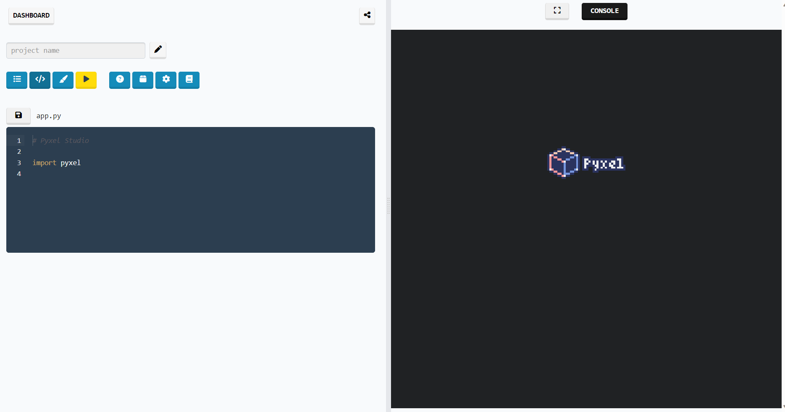

Dans cet article, je vais vous présenter le site pyxelstudio.net et le module pyxel, qui vous permettent de créer facilement des jeux rétro avec python. Je vais vous montrer comment utiliser le site pyxelstudio.net pour éditer et exécuter du code en ligne, sans avoir besoin d’installer python ou pyxel sur votre ordinateur.
Qu’est-ce que pyxelstudio.net ?
Pyxelstudio.net est un site web qui vous permet d’écrire et d’exécuter du code python avec le module pyxel directement dans votre navigateur. C’est très pratique si vous voulez rapidement tester vos idées de jeux sans avoir à installer python ou pyxel sur votre ordinateur. Pour accéder au site, il suffit de taper l’adresse https://www.pyxelstudio.net/ dans la barre d’adresse de votre navigateur. Vous arrivez alors sur la page d’accueil du site, qui vous propose plusieurs options. Je vous conseille de créer un compte (en cliquant sur “register”), car cela vous permettra de retrouver vos projets très facilement quand vous passez d’une machine à une autre. Ainsi, vous pouvez créer un nouveau projet, ouvrir un projet existant, ou encore consulter les exemples de jeux réalisés avec pyxel. Ce site a été développé par Laurent Abbal, professeur de NSI au lycée français international de Tokyo.
{kind=link}
L’interface de la zone d’édition
Outre l’édition du code et son exécution, différentes actions sont possibles depuis cet écran.
{kind=link}
- Accès au dashboard : liste des projets créés, avec la possibilité de les éditer et de les supprimer.
- Définition du nom du projet.
- Liste des fichiers (fichiers python, fichiers de ressources, etc.) composant le projet.
- Afficher la zone d’édition du code. 5.Éditer le fichier de ressources : par défaut, c’est un fichier nommé res.pyxres, qui permet de définir des graphismes, des sons et de la musique pour le projet.
- Accès à l’édition de la description et de la documentation de votre projet.
- Déclaration des modules python utilisés par votre projet.
- Accès aux paramètres : permet, par exemple, de rendre votre projet public ou privé.
- Afficher un résumé des commandes pyxel existantes.
- Enregistrer le fichier en cours d’édition.
- Générer un lien pour partager le projet.
Lorsqu’un programme est en cours d’exécution, on trouve deux boutons au-dessus de la zone d’exécution.
{kind=link}
- Mettre le jeu en plein écran.
- Afficher la console : utile pour l’affichage de certaines variables en phase de débogage.
Pour finir ce petit tour de l’interface du site, regardons de plus près l’affichage de la liste des fichiers d’un projet :
{kind=link}
- Ces deux boutons permettent respectivement de créer un nouveau fichier et de téléverser un fichier existant.
- Le fichier python de l’application. C’est lui qui contient le code du jeu et le bouton permet de l’éditer.
- Le fichier de ressource, créé automatiquement à la création d’un projet. Initialement vide. Le bouton permet de l’éditer.
- Ces boutons permettent de télécharger les fichiers python et pyxres.
Démonstration
Pour vous montrer comment fonctionne le site pyxelstudio.net, écrivons un exemple simple de code pyxel, qui affiche un message “Hello Pyxel!” à l’écran. Ce code est tiré du fichier 01_hello_pyxel.py, qui fait partie des exemples fournis avec le module pyxel. Voici le code :
import pyxel
class App:
def __init__(self):
# initialisation de l'écran avec une taille de 160 x 120 pixels
pyxel.init(160, 120)
pyxel.run(self.update, self.draw)
# définition de la fonction update, qui est appelée à chaque frame
def update(self):
pass
# définition de la fonction draw, qui est appelée à chaque frame après la fonction update
def draw(self):
# on efface l'écran avec la couleur 0 (noir)
pyxel.cls(0)
# on affiche le texte "Hello Pyxel!" à la position (55, 41) avec la couleur 7 (blanc)
pyxel.text(55, 41, "Hello Pyxel!", 7)
# on exécute le programme avec les fonctions update et draw
App()Nous allons copier ce code dans l’éditeur de code du site pyxelstudio.net, puis cliquer sur le bouton “Run” pour l’exécuter. Nous voyons alors apparaître le message “Hello Pyxel!” à l’écran, comme prévu. Voilà, nous venons de réaliser notre première application avec pyxel ! C’était facile, non ?
{kind=link}
Quelles sont les autres fonctionnalités du site ?
Le site pyxelstudio.net vous offre d’autres possibilités intéressantes, comme le partage de code (voir ci-dessus), la sauvegarde de projets, la visualisation des exemples, etc.
Si vous voulez partager votre code avec d’autres personnes, vous pouvez cliquer sur le bouton de partage en haut à droite de la zone d’édition. Vous obtenez alors un lien que vous pouvez copier et envoyer à qui vous voulez. La personne qui reçoit le lien peut ainsi ouvrir votre code dans son navigateur et l’exécuter sans avoir à le télécharger. C’est très pratique pour montrer vos créations ou demander de l’aide. Je donnerai dans des articles suivants des conseils et des tutoriels pour la création de jeux avec pyxel dans pyxelstudio.
Comment créer un nouveau projet ?
Pour créer un nouveau projet, cliquez sur le bouton “Create”. Vous arrivez alors sur l’interface principale du site, qui se compose de deux parties : à gauche, l’éditeur de code et à droite la fenêtre d’exécution.
